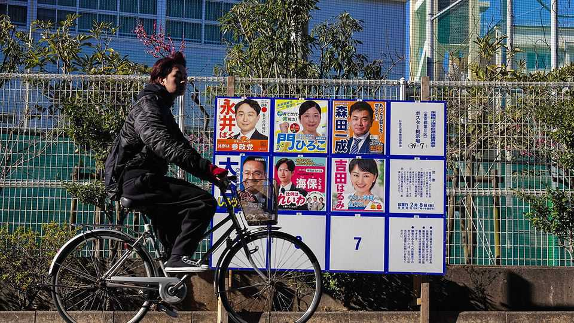

Japanese politics is becoming less of a turn-off for the young
Social-media-savvy politicians are drawing them in

Jul 30th 2026
KOSHIYAMA RYOTARO, a 33-year-old in Hokkaido, northern Japan, used to pay little heed to politics. But a few years ago he discovered a reformist mayor in western Japan who live-streamed his council meetings on YouTube. Mr Koshiyama learnt video-editing and posted clips of parliamentary debates and rallies, hoping “to show people how interesting politics is”.
Mr Koshiyama is part of a broader shift. Thanks to younger, social-media-savvy politicians, disengaged younger Japanese are taking more interest in politics. In last year’s upper-house election—when upstart parties of various stripes made striking gains—turnout among 18- and 19-year-olds rose from 35% in 2022 to 45%; among those in their 20s and 30s, it jumped by more than ten percentage points; the trend continued at the lower-house election in February. The Liberal Democratic Party (LDP) still dominates. But the young are transforming politics, making it more volatile and more competitive.
Japan's political system has long seemed ossified. Like many other countries, it was shaken by a wave of leftist student demonstrations in the 1960s and 1970s. But then apathy set in. Today, pensioners are more likely to join protests than students are. Voter turnout languishes at around 50% across all age groups, and is at 30% or so for those in their 20s.
Young voters have suffered a sense of “powerlessness”, observes Hata Masaki of Osaka University of Economics. At the ballot box they were outnumbered by the old, and few politicians seemed to represent their interests or understand their habits. Though online campaigning has been legal since 2013, politicians still relied on old-school methods—shouting from loudspeaker lorries and shaking hands.
But recently a more entrepreneurial, meme-driven form of politics has emerged. In 2024 Ishimaru Shinji, a little-known former mayor of a small town in Hiroshima (Mr Koshiyama, the YouTuber, is a fan), achieved a stunning second place in a Tokyo gubernatorial race, mobilising young voters through YouTube and TikTok and promising to oust power-hungry politicians. (He has since appeared in a reality-TV dating show.)
That autumn the Democratic Party for the People, a new party, quadrupled to 28 its number of seats in the lower house of parliament; its promise to increase take-home pay by cutting social-insurance premiums resonated with young people squeezed by stagnant wages. In last year’s upper-house election, a populist-right party, Sanseito (”Do It Yourself”), gained ground, while Team Mirai (”Future”), a techno-optimist party that embraces AI, broke through in lower-house elections.
Takaichi Sanae, the country’s first female prime minister, has proved well-suited to the online age. Before she took office in October, the ruling LDP was in deep crisis after a series of scandals. But she led it to a historic landslide in February’s election—though her previously sky-high approval ratings have started to dip. “Most of my friends thought: ‘Wow! She seems different, she might be able to do something for us’,” explains Ichisawa Konagi, a 21-year-old in Tokyo, though she adds that many of her friends would struggle to explain any of Ms Takaichi’s policies.
The danger is that online campaigning encourages politicians to become more provocative in their hunt for clicks and views. Sanseito, which ran on an anti-immigrant platform, has managed to win over many young voters. Tamekuri Masaya, a 34-year-old supporter in Imabari in the west of Japan, feels the country is “getting invaded”. Distrusting mainstream media, he gets his news online. Masuo Hiroshi, who makes money posting political videos on YouTube, says he gets more views when he flatters right-leaning politicians and mocks liberals and leftists. Furuya Tsunehira, a commentator, reckons that a small network of right-wing users sets the tone for a far larger audience with no strong views of their own. Some pundits liken youngsters’ political engagement to “oshikatsu”, a term used for pop-idol fandom.
Younger Japanese are likely to support socially progressive values, but not to vote for leftist politicians espousing such policies. They have grown up wary of bellicose neighbours such as North Korea and China. The left’s opposition to military spending and its decades-long insistence on preserving Japan’s pacifist constitution feel out of touch, observes Murohashi Yuki of the Japan Youth Council, a pressure group. The same is true of nuclear power: many young people take a pragmatic view and favour restarting plants shut down after the Fukushima disaster in 2011; older progressives still staunchly oppose this.
“Young people are not necessarily shifting to the right,” says Mr Murohashi, “but they are becoming more realistic.” Dismissing their political engagement as mere fandom may be missing the point. ■
For exclusive coverage of Asian politics, economics and security, sign up to Asia Bulletin, our weekly subscriber-only newsletter.